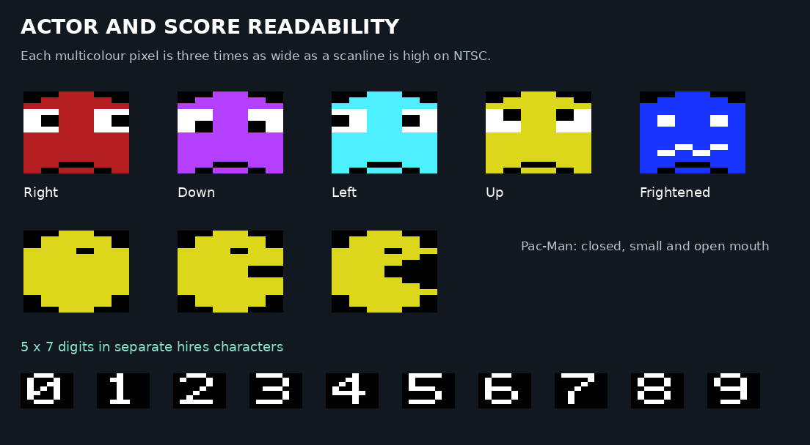

The same maze routes in a wider presentation, with six-pixel ghost faces and separate hires score digits. The two panels use the same NTSC dot proportions.
This is a static artwork study. It does not demonstrate game speed or reduced flicker. Blue walls and white dots use shared colours; two actors sharing a colour cell can still share their body colour. The frightened and overlap views illustrate artwork rather than simulated game states.
Read the memory budget and validation · Save comparison · Moving renderer test
